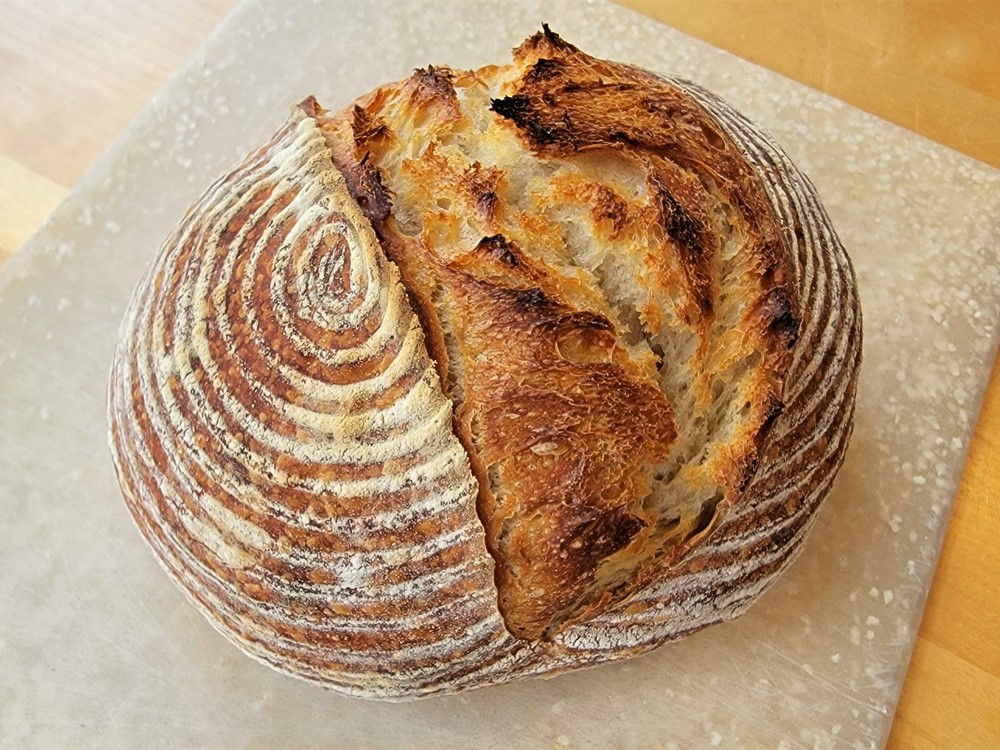

SOURDOUGH RECIPE

INGREDIENTS
- 1. 3 cups all purpose flour
- 2. 1 1/4 cups water
- 3. 1/3 cup sourdough starter
- 3. 1 1/2 teaspoons salt
DIRECTIONS
- Mixing the dough/autolyse:
In a large bowl, mix water and starter with a whisk. Add flour
and mix with a spatula until there are no dry clumps.
Let sit for 1 hour.
- Folding:
After 1 hour, sprinkle salt on top of the dough and mix it in with wet hands.
Stretch and fold over the 4 corners of the dough. Let sit for 30 minutes.
Repeat the folding and resting 4-5 more times for a total of 5-6 turns/folds.
This should take about 2 1/2 to 3 hours.
- Let the dough rest at room temperature for 1 hour after the final fold.
- First rise:
Cover the bowl with a lid or plastic wrap and place in the refrigerator
for 12–22 hours.
- Shaping:
Pull the dough out of the fridge and scrape it onto a clean counter that's
lightly dusted with flour. Form into 2 balls and let rest for 20–30 minutes.
- After the rest, shape the dough into 2 round, taught balls by gently cupping your
hands around the dough and rolling it on the counter to create surface tension.
- Dust a tea towel generously with flour. Line a medium bowl with it. Invert dough ball
into the bowl, bottom side up. Dust with flour. Fold the corners of the tea towel over
to cover the dough. Repeat with second dough ball.
- Second rise:
Place in refrigerator to rise for 3–4 hours.
- Baking:
About 45 minutes before you're ready to bake the bread, preheat oven to 500ºF.
Place a Dutch oven with its lid on in the oven to preheat as well.
- When the dough is done rising, invert one of the loaves onto a sheet of
parchment paper. Dust the top with flour and gently rub it over the surface
of the dough with your hands. Score the surface of the dough with a serrated knife.
- Take the Dutch oven out of the oven and transfer the dough, parchment paper and all,
into the Dutch oven. Be careful as the Dutch oven will be very hot. Cover and bake in
preheated oven for 30 minutes. Remove the lid and bake for another 10–15 minutes, or until
the loaf is deep brown and sounds hollow when rapped on the bottom. It should register at least
200ºF on an instant read thermometer inserted in the middle.
- Remove the loaf to a cooling rack. Allow to cool for 1–2 hours before slicing and enjoying.
Back to class website